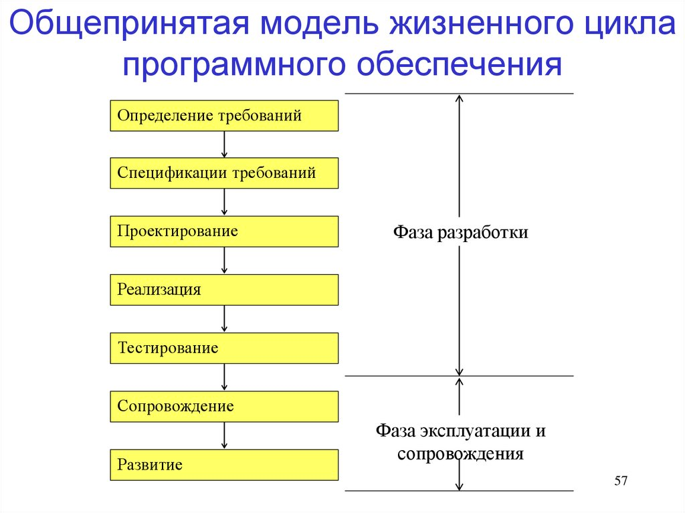

|
Стандарты жизненного цикла ПО
- ГОСТ 34.601-90
- ISO/IEC 15288:2015 Systems
and software engineering — System life cycle processes
- ISO/IEC/IEEE 12207:2017
System and software engineering — Software life cycle
processes
Стандарт ГОСТ 34.601-90
Стандарт ГОСТ 34.601-90 предусматривал
следующие стадии и этапы создания автоматизированной системы
(АС):
- Формирование требований к
АС
- Обследование объекта и
обоснование необходимости создания АС
- Формирование
требований пользователя к АС
- Оформление отчета о
выполнении работ и заявки на разработку АС
- Разработка концепции АС
- Изучение объекта
- Проведение необходимых
научно-исследовательских работ
- Разработка вариантов
концепции АС и выбор варианта концепции АС,
удовлетворяющего требованиям пользователей
- Оформление отчета о
проделанной работе
- Техническое задание
- Разработка и
утверждение технического задания на создание АС
- Эскизный проект
- Разработка
предварительных проектных решений по системе и её частям
- Разработка
документации на АС и её части
- Технический проект
- Разработка проектных
решений по системе и её частям
- Разработка
документации на АС и её части
- Разработка и
оформление документации на поставку комплектующих
изделий
- Разработка заданий на
проектирование в смежных частях проекта
- Рабочая документация
- Разработка рабочей
документации на АС и её части
- Разработка и адаптация
программ
- Ввод в действие
- Подготовка объекта
автоматизации
- Подготовка персонала
- Комплектация АС
поставляемыми изделиями (программными и техническими
средствами, программно-техническими комплексами,
информационными изделиями)
- Строительно-монтажные
работы
- Пусконаладочные работы
- Проведение
предварительных испытаний
- Проведение опытной
эксплуатации
- Проведение приёмочных
испытаний
- Тестирование АС.
- Сопровождение АС.
- Выполнение работ в
соответствии с гарантийными обязательствами
- Послегарантийное
обслуживание
Эскизный, технический проекты и рабочая документация — это
последовательное построение все более точных проектных решений.
Допускается исключать стадию «Эскизный проект» и отдельные этапы
работ на всех стадиях, объединять стадии «Технический проект» и
«Рабочая документация» в «Технорабочий проект», параллельно
выполнять различные этапы и работы, включать дополнительные.
 |